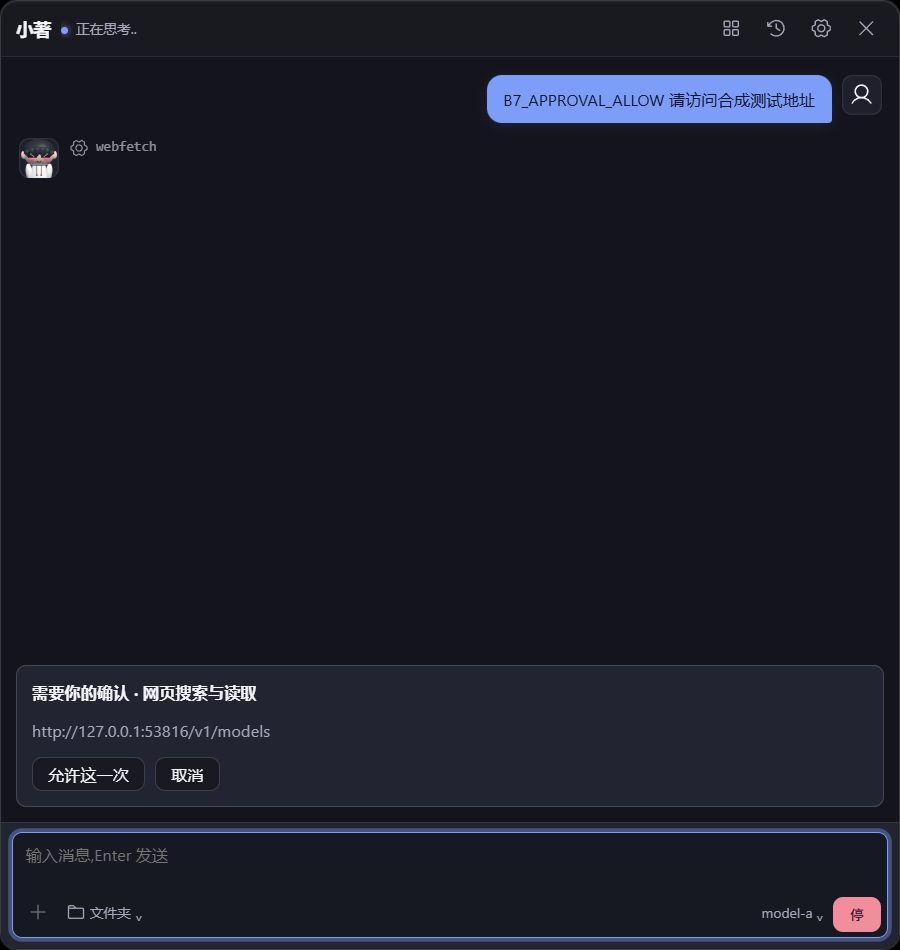
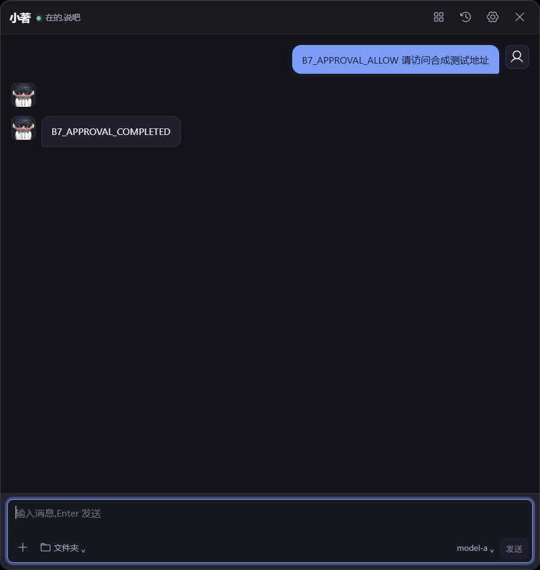

YUME 0.4.21 · Windows · 2026-10-27 · B7 进行中
Tao 绘制重入已复现并修复，原生回归 25 次通过；审批 SSE 响应头等待与正文空闲期限分离，真实故障注入从旧版 40 秒未就绪恢复到约 4.1 秒重连，旧连接已关闭。物理审批取消/允许一次、缩放/截图、最小化恢复及桌宠重开通过；Rust 974 pass / 24 ignored，正常构建恢复。B7 仍进行中，预计 Windows 还需 3–4 轮，Mac 专有项另计，未提交/推送。
| 范围 | 实际结果 |
|---|---|
| Tao | 修复前相同断言；修复后外层完成绘制且后续事件正常。18 次宿主缩放/截图无崩溃。 |
| SSE | 旧版 40 秒仍未就绪；新版 3 秒关闭旧连接，约 4.1 秒重连，跨心跳后审批通过。 |
| 物理 GUI | 取消/允许一次、缩放、最小化恢复、桌宠重开通过；真实工具回传已核对。 |
| 仍待完成 | 日志五工具/到期、拖放/更多附件、迁移恢复、活跃工具二次启动、内存/硬件/生产对照。 |


原始事故的外部触发源未追溯证明；可恢复断流保留。快速截图不等于绘制完成，完整画面采用等待后的截图核对。预计 Windows 还需 3–4 轮，Mac 专有项另计。